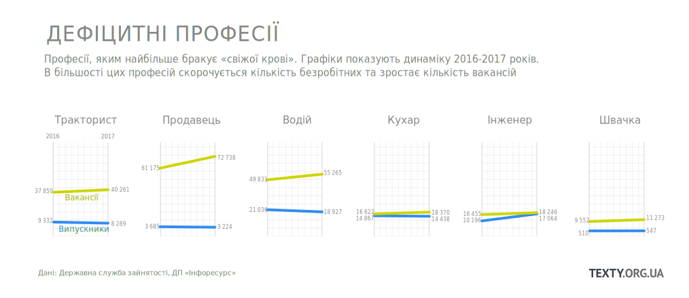
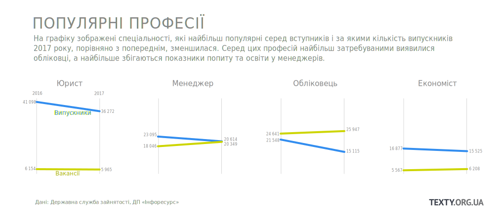
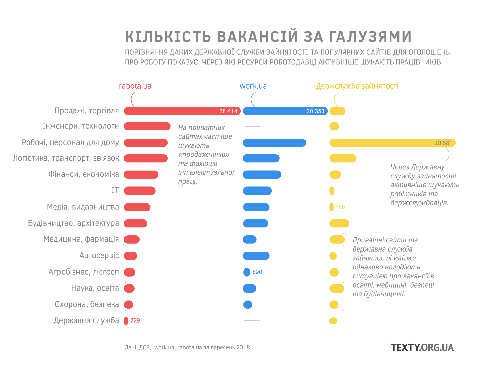
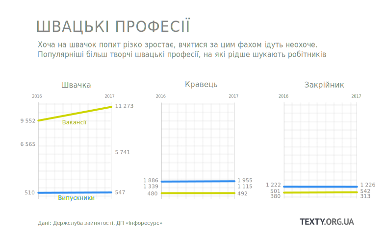
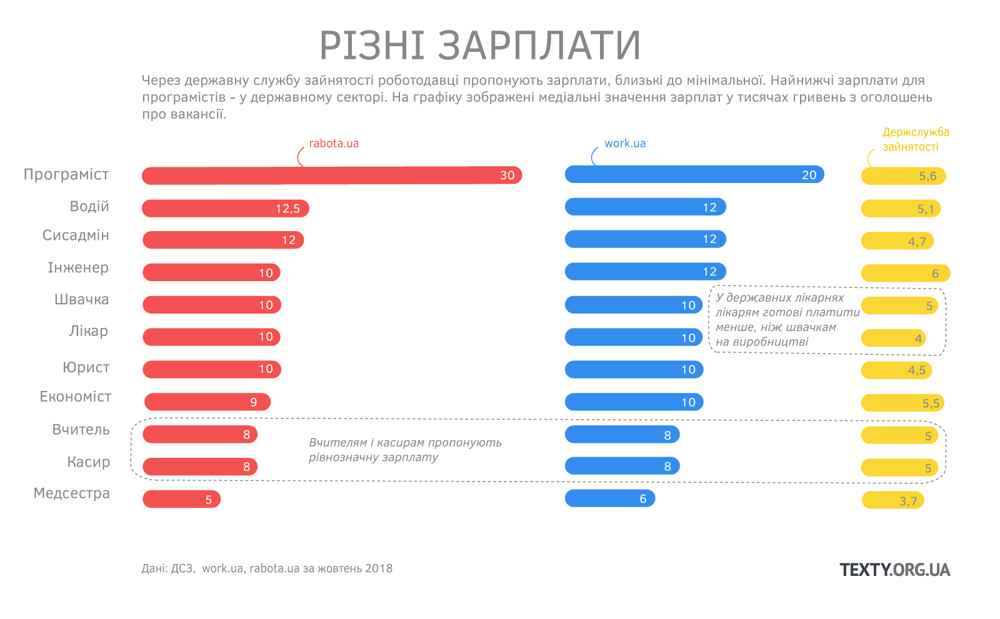
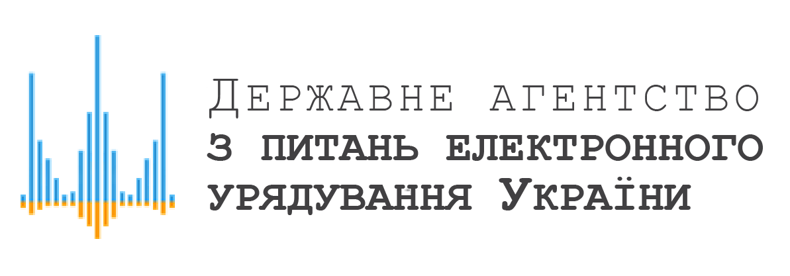

Поки компанії не можуть знайти водіїв, сантехніків та швачок, а в лікарнях бракує медсестер, найбільше «свіжої крові» на ринок праці постачають юридичні та економічні факультети. У 2017 році юристів потребували стільки ж, скільки й офіціантів чи електромонтерів. Принаймні, про це свідчать дані Державної служби зайнятості. Але випускників-юристів лише за один рік ушестеро більше, ніж оприлюднених вакансій. Уряд планує навести лад із цим дисбалансом. Але там слабко уявляють, що відбувається на ринку, й не мають даних ані про потреби роботодавців, ані про те, які професії здобували студенти державним коштом.
Проект створений інтернкою Зоєю Красовською
на основі відкритих даних Державної служби зайнятості (ДСЗ)
У 2017 році найбільше випустилося юристів, фінансистів, обліковців, економістів, філологів, вчителів молодших класів. Якщо вони шукатимуть роботу за спеціальністю, то на одне робоче місце претендуватимуть шість юристів, чотири економісти, два завгоспи («обліковці» у термінах чиновників від освіти).
Що вище та лівіше розташована точка на графіку, то більший розрив між великою кількістю випускників та маленькою кількістю вакансій. Маркетологів, кондитерів, штукатурів та автослюсарів випускається також більше, ніж готові взяти на роботу.
Графік інтерактивний. Щоб побачити назву професії, наведіть мишкою на точку.
Щоб рухатися, треба пояснити декілька термінів.
Робітники — так далі ми, користуючись офіційною термінологією, називаємо випускників училищ, коледжів та технікумів, що отримали освіту кваліфікованих робітників. Їх переважно випускається менше, ніж загалом є офіційних вакансій.
Професіонали — так далі називаємо випускників, які мають ступінь молодшого спеціаліста, бакалавра, магістра та спеціаліста. За деякими професіями їх випускають більше, ніж оголошують вакансій.
На графіку видно, що серед топ-вакансій найбільше простих професій, тих, які можна опанувати без освіти: водії, продавці, працівники котельні, охоронці. Але, як не дивно, за цими професіями теж навчаються в коледжах чи училищах.
Професія водія — найпопулярніша серед робітничих. Але за рік ринок її отримує втричі менше, ніж потребує. Протягом 2016-2017 років попит зростав, а кількість випускників зменшилася. До того ж, в училищах водій є професією-додатком до основної. У дипломі робітника може бути одразу кілька фахів, наприклад, водій може одночасно бути слюсарем, працівником ферми, штукатуром або зварником.

Коштом держбюджету в профучилищах навчають робітників за 19 фахами. Вони містяться у переліку «професій державного значення», що переглядався й у 2018 році. З топ-100 вакансій тут є лише три: токарі, монтери колій та виноградарі. Немає трактористів, продавців, швачок та медсестер.
Натомість із держбюджету оплачують, наприклад, навчання тісторобів, живописців, мотористів та машиністів бурової установки (працівники на будівництві), яких з-поміж мільйона вакансій було лише кілька десятків.
З децентралізацією відповідальність за формування замовлення на робітників перейшла на регіональний рівень. Обласні адміністрації, заклади профосвіти, місцеві роботодавці мали би спільно погоджувати, в яких кадрах є найбільша потреба. Десь компанії самі проявляють активність та долучаються до навчальних планів, аби отримати найкраще адаптованих під себе працівників. Але загалом діалог лише починається.
Про те, що юристів та економістів забагато, говорять уже давно. І з 2018 року суттєво обмежили держзамовлення за цими напрямками. З юристами це поки не спрацювало: у 2018 році, попри зменшення бюджетних місць, це все одно найпопулярніша для вступників професія. Також зменшили кількість бюджетних місць на психологію, фінанси, облік (завгоспи) та менеджмент. Хоча на графіках видно, що завгоспів (а це споріднена з бухгалтерами професія, що вимагає контролю не лише за фінансами, а й за майном підприємства) в останні роки випускали менше, ніж пропонувалося вакансій.

МОН збільшив держзамовлення на освітні спеціальності, природничі науки, математику й статистику. Але й у межах одного напрямку та одного міністерства (Міносвіти формує держзамовлення і є роботодавцем для вчителів) може виникати дисбаланс. Наприклад, вчителів початкової школи в 2017 році випустили більше, ніж було вакансій. А майбутніх викладачів середньої школи та вишів випускали суттєво менше, ніж потребували. В МОН, схоже, зробили висновки, тож у 2018 році бюджетних місць для майбутніх вчителів середньої школи побільшало.
Аналіз даних про вакансії від центрів зайнятості за травень-серпень 2018 року показав, що роботодавцям важко знайти як низькокваліфікованих працівників (швачок, мулярів, водіїв, підсобних працівників, вантажників, прибиральників), так і тих фахівців, для яких цінуються кваліфікація й особистий професіоналізм (операторів верстатів, електромонтерів, трактористів). І тих, і тих професій найбільше серед вакансій, які залишились незаповненими за 4 місяці.
Серед управлінців у дефіциті керівники виробничих ділянок (майстри), в торгівлі — касири, в охороні здоров‘я — медсестри.
Приватні сайти оголошень та державна служба зайнятості приблизно однаково показують поточні потреби у працівниках медицини, освіти та безпеки, а також будівництва, логістики та зв‘язку.

Разюча різниця у даних щодо медіаринку, ІТ-сектору, торгівлі та продажів. Роботодавці з цих сфер набагато рідше повідомляють про вакансії центрам зайнятості.
Можна припустити, що до центрів зайнятості не звертаються ті, хто платить чорну зарплату (швидше за все, це стосується торгівлі та медіа) або оформляє працівників як ФОПів (традиційно для ІТ), або розраховує знайти молодших сучасних працівників, що теж актуально для медіа й ІТ.
Цікаво, що через Службу зайнятості частіше, ніж у комерційних добірках оголошень, шукають робітників та працівників без освіти, а також держслужбовців і чиновників місцевого самоврядування.
Нема кому працювати
У молодій львівській компанії MiniZavod довго шукали швачку — і знайшли її саме в центрі зайнятості, розповідає співзасновник компанії Іван Шегда. Бренд займається поліграфією, зокрема, друкують на одязі та аксесуарах власного пошиття. Іван каже, що знайти швачку важко з кількох причин: доводиться конкурувати за працівників з великими фабриками, які більше платять, багато працівників їдуть до Польщі, а якщо залишаються, то вимагають «польську» зарплату. Ще одна проблема — люди цієї професії не хочуть працювати на когось, а обирають вільний графік та роботу з дому. «Дівчина, яку ми знайшли, цікавиться більш творчою роботою. А це наша перевага перед великими підприємствами, де добре платять, але вимагають великий обсяг однотипної роботи», — каже Іван.

Серед затребуваних специфічних професій 2018 року можна виокремити медсестер. Це низькокваліфікована робота, якої без медичної освіти не отримати. Самі медсестри нарікають, що платять їм надто мало. «Я працювала в дитячій реанімації, це велика відповідальність. Дозування призначає лікар, але вводимо всі препарати ми, і найменша помилка може дорого коштувати», — розповідає Анастасія Солдатова з Дніпра. Вона закінчила училище торік і отримувала за роботу 3200 гривень на місяць. Каже, з 20 одногрупниць за фахом пішли працювати лише п‘ятеро.
Аби утримувати себе, Настя працює майже без вихідних: поєднує 1,5 ставки у державній лікарні та роботу в аптеці. Заодно отримує вищу освіту фармацевта й планує далі працювати лише за цим фахом, бо можна більше заробляти. Звична практика для медсестер — працювати у державних лікарнях заради стажу, а в приватних — задля грошей. Отримувати надбавки медсестри можуть через підвищення кваліфікації, роботу в складних умовах: наприклад, у реанімаційних чи інфекційних відділеннях. За даними центрів зайнятості, найвищу зарплату для медсестри пропонували в Києві — 6500 гривень. На сайтах оголошень у приватних клініках анонсують зарплати до 10-15 тисяч гривень.
Водіїв бракує явно не через зарплати. Однаково провисали місяцями й вакансії на 2172 грн за неповну ставку водія у Луцькому центрі зайнятості, й на птахофабриці у Вишгороді за 18 тисяч гривень на місяць. У «Миронівському хлібопродукті», якому належить птахофабрика, вважають, що недобір пов‘язаний з розширенням виробництва. Але експерти також зазначають, що водії частіше знаходять роботу за кордоном. Приватні сайти рясніють оголошеннями про роботу для водіїв за кордоном, як правило, це далекобійники на 50-60 тисяч гривень.

Попит на юристів, обліковців, економістів, бухгалтерів, кондитерів, фармацевтів, штукатурів, менеджерів, маркетологів, експедиторів, перукарів — великий, але так само багато й безробітних за цими фахами.
«Цим професіям властивий швидкий оборот вакансій», — пояснює кандидатка економічних наук, заввідділу соціальних проблем ринку праці Інституту демографії Лариса Лісогор.
Владислав Ременяк у 2017 році отримав освіту юриста в Одеській академії. Обирав між прикладною математикою та юрфаком. «Аргументи на користь першого — великий попит на ринку праці й перспективна зарплата. Найбільша перевага юридичної освіти — її універсальність. Є велике коло управлінських та адміністративних посад (окрім суто професійних), які доступні за наявності юридичної освіти», — каже Владислав.
Одразу після бакалаврату пішов працювати в суд на малу зарплату та не найкращі умови. Зараз він юрисконсульт великого холдингу. Зізнається, що ринок недружній до молодих фахівців, і особливо до тих, хто розраховує на високі доходи. Вважає, що частково популярність юридичної професії викликана застарілими уявленнями про ринок праці, часто серед батьків та родичів абітурієнтів.
Серед робітників популярна професія автослюсарів, а от на слюсарів-сантехніків вчитися йдуть неохоче, хоча вакансій значно більше.
Як пояснила Лариса Лісогор, автослюсарі більш схильні створювати власний бізнес, тому й не світяться в оголошеннях про пошук робітників чи роботи.
А сантехніки частіше є найманим персоналом, до того ж, у комунальних установах, які активніше взаємодіють з центрами зайнятості для пошуку робітників. Тому їх частіше шукають через оголошення.
Те, що часто в новинах пишуть про брак інженерів і професійних технарів, не збігається з даними центрів зайнятості. Безробітних інженерів більше, ніж вакансій. Чому так?
«Це питання якості освіти й перепідготовки своїх працівників самими підприємствами, — пояснює Лариса Лісогор. — Інженер, який отримав освіту ще в СРСР і не працював з сучасним обладнанням, не знайде роботи».
У чому проблеми прогнозування
У 2018 році Мінекономрозвитку (МЕРТ) ініціювало зміни до механізму держзамовлення. При недоборі на технічні спеціальності виші не можуть збільшити кількість бюджетників за іншими напрямками, наприклад, на маркетинг та юриспруденцію, куди більше охочих на вступ.
Директор аналітичного центру CEDOS Єгор Стадний наголошує, що скорочувати бюджетні місця безболісно можна там, де й так багато вступників на контракт: право, менеджмент, економіку, туризм, журналістику, міжнародні відносини. Також варто змінити підхід до вартості підготовки одного випускника.
«Якщо держава ставить пріоритетом більш коштовні спеціальності, які не є популярними серед абітури, то на них мають виділяти більше грошей: на лабораторне обладнання, зразки для практичної роботи та сучасну техніку. У довготривалому ефекті це би могло підвищити інтерес до таких професій», — каже Єгор Стадний.
При МОН створена робоча група, яка працюватиме над оцінкою зайнятості випускників. Це допоможе оцінити якість підготовки кадрів за їх затребуваністю. За оптимістичними оцінками, у 2019 році може бути готове технічне завдання для такого моніторингу.
Оновлене держзамовлення має багато спільного з аналізом поточних вакансій. Хоча лише вакансії не є базою для прогнозу потреб на ринку праці. Вони відображають тільки частину поточних потреб компаній. У питаннях, які стосуються ринку праці, взаємодіють кілька відомств: Мінсоцполітики опікується працевлаштуванням, МОН спрямовує роботу закладів освіти, а МЕРТ прогнозує потреби бізнесу на 3-5 років.
Прогноз МЕРТ на 2018-2021 роки викликає неабиякий скепсис. Він не надто відрізняється від аналізу поточних потреб і передбачає найбільше зростання попиту на працівників усіх галузей промисловості, будівництва, торгівлі та автосервісів.
Тоді як на технарів (інженерів-фізиків, хіміків, математиків), за цим прогнозом, попит зросте лише на 12%. У МЕРТ визнають, що методика застаріла, тож закликають усіх зацікавлених долучатися до її вдосконалення. Але навіть недосконалий документ знайти у вільному доступі не можуть, наприклад, абітурієнти та їхні батьки. “Тексти” отримали його на запит.
Прогноз ринку праці США можна знайти на сайті Департаменту праці. Він є результатом збору статистичних даних, які подають державі самі ж компанії. Це не лише питання методології — в Україні вона є, наголошує Лариса Лісогор. Це проблема сталості ведення статистики, а також здатності самих компаній оцінювати свій стан та перспективи розвитку. Відсоток українських компаній, які можуть планувати роботу на 5-10 років, надзвичайно малий. Експертка прогнозує, що в найближчі роки економіка активно перебудовуватиметься, зокрема й завдяки реформам. Наприклад, ринок сільського господарства значно зріс у структурі ВВП. І хоча сьогодні великі агробізнеси найбільше потребують робітників, але найближчі роки прогнозують великий попит на аналітиків, фахівців з інновацій та ІТ.
«Дуже небезпечно планувати майбутнє, зважаючи на сьогоднішні потреби, адже вони можуть бути примітивними. Я хочу жити в країні, де через 10-15 років будуть втілювати біотехнологічні розробки, дослідження космосу, проекти з великою доданою вартістю. Треба стратегувати в галузі та випереджати потреби», — мріє Єгор Стадний.
Як збиралися дані
В основу дослідження лягли дані Державної служби зайнятості (ДСЗ). Вони не відображають повної картини в потребах на ринку праці, але є найбільш сталими та структурованими. Аби показати, які галузеві роботодавці не звертаються до центрів зайнятості, ми порівняли оголошення приватних сайтів з даними ДСЗ.
Під час цього дослідження отримати дані про кількість працевлаштованих випускників за кожним фахом не вдалося. Міністерство освіти має лише узагальнені цифри. Зрештою до дослідження увійшли дані про кількість виданих дипломів, що є у розпорядженні держпідприємства «Інфоресурс». Там дані лише з 2015 року, але й вони неповні. Тож дослідити великий проміжок, аби відстежити динаміку, просто неможливо.
Ще одна проблема — немає чіткого затвердженого переліку, яка освіта дає змогу працювати за певною професією. Аналізувати дані щодо робітників простіше, бо код професії в дипломі відповідає коду професії у відповідному класифікаторі. Для побудови графіку моніторилися вимоги до освіти в оголошеннях про вакансії, описи спеціальностей, які формували самі університети, — і так будувалися зв’язки між освітою та професією. У державних структурах давно говорять про те, що класифікатор професій застарілий. А робота над побудовою стандартів відповідності освіти та професій — лише в процесі. Тож це дослідження показало, наскільки слабкою, нестабільною та закритою є інформаційна база, що мала би допомагати бізнесу та абітурієнтам прогнозувати свої можливості та потреби і стежити за ситуацією на ринку праці.

Матеріал підготовлено в рамках проекту «Прозорість та підзвітність у державному управлінні та послугах» / TAPAS
TAPAS — це проект технічної допомоги, що фінансується Агентством США з міжнародного розвитку (USAID) та урядом Великої Британії через UK aid, спільно з українським урядом, місцевою владою та громадянами працює над удосконаленням системи публічних закупівель, електронних послуг та доступу до відкритих даних для зменшення корупції. Проект виконується Фондом «Євразія» у партнерстві з органами державної влади України та у співпраці з українськими та міжнародними організаціями.